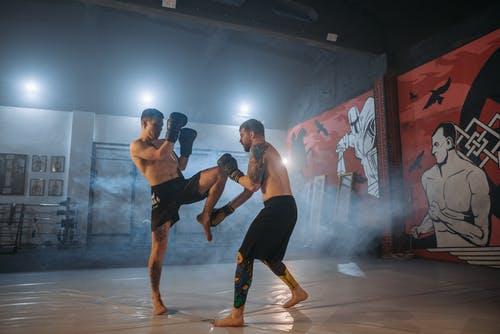

Francis Ngannou is the one of the world’s best MMA fighters in the
world. He is currently the UFC heavyweight champion of the world,
which he won against a UFC veteran Stipe Miocic. Although his rise
in the UFC has been astronomical, it was not all glitz and glamour
for the champ.
Childhood
Francis was born and brought up in Cameroon. To say that he had a
very tough childhood is an understatement. It wasn’t easy growing up
for him, since his parents got divorced which was very hard for him
mentally and he was forced to live with his mom due to his
father’s domestic violence. Unlike most kids, Francis started
working at the age of 10 in one of the most physically intensive
jobs, sand mining. It was because of this that Francis developed a
good physique and strength. Francis used to work on weekends and
during holidays for a little amount of money. He recalls that while
other kids were going on a vacation to their relative’s house, he
used to be working to support his family. It was so bad that
sometimes Francis wouldn’t have school supplies to write on, so
he would find empty sheets of paper from his old copybooks to
write on which often led to him getting into arguments with his
teachers and often getting kicked out of the class. His mother was
informed about his “behaviour”, but she couldn’t do anything as
she couldn’t afford to buy him new school supplies. Due to
financial problems, Francis had to drop out of school as he
couldn’t pay his school fees. He was really interested into
boxing but people around him used to discourage him saying that
he would get fatal brain injuries such as Parkinson’s or Brain
heamorrage. He still believed in his dream but he just kept it to
himself.
Death of A Loved One
Although his father was a bad person, there were some good things
about his father. His father got a terrible illness which was
getting worse day by day and Francis couldn’t take him to the
hospital as he wasn’t financially stable enough up to do so. This
ultimately led to his father’s death which made him think that his
father was dying and he couldn’t do anything about it. He started
wondering what would happen if anything like that happened to his
mother, would he be able to save her. Due to his father’s death, he
decided to get out of Africa and travel to a place which had more
opportunities in combat sports.
The Journey
In his early/mid 20’s Francis decided to travel to Nigeria. During
his last few weeks in Cameroon Francis was very emotional taking it
all in as it might be the last time he ever sees Cameroon, if things
don’t go right for him on his journey. Francis had to swallow his
money because of the gangs and criminals, along the route to
Nigeria, would take anything of value from the people travelling.
After spending some time in Nigeria, Francis stood on the side of a
truck which would carry illegal immigrants like him through the
Sahara Desert to Algeria. Francis regarded this as the toughest
part of his so called trip because standing on the side of a
moving vehicle going 120 kmph is very dangerous and could result
in death if you let go of your grip. Francis had made it safely
to Algeria at this point and traded his money in exchange for the
Algerian currency to buy a fake Mali passport since Mali had a
good relationship with Algeria. He would then proceed with his
journey to Morocco as it was the nearest country to Europe.
Francis stayed in Morocco for a while trying to figure out a way
to reach Spain. He used to stay in a forest near border control
taking not of what type of technology they to use and how to
bypass it to begin his new life. Francis and a couple of other
immigrants put together some money to buy a raft and covered it
with aluminum to bypass the radar. Unfortunately, they got caught
by the Moroccan police and they were left in the desert once again
to suffer after the police were done with them. Francis was
unsuccessful for his next 7 tries to reach Spain and ended up in
the desert each time. He was beginning to lose hope, but he came
so far so he thought why not give it another try. Alas, He was
successful with his fellow immigrants. Once he was in Spain he
contacted the Red Crescent organization for food and water.
After wards, he was held in a detention center for coming to the
country illegally and was facing trial with an attorney as his
only defendant. Francis recalled the detention center as very
boring as if it was slowly killing you. Once he got out of jail,
he would travel to a small town near Paris, France. He would sleep
in an underground parking lot and during the day he would try to
find a nearby gym to train in.
The Beginning of an Era
Francis finally found a boxing gym, but he couldn’t afford it, so he
asked the receptionist to talk to the coach. After explaining his
story to the coach, the coach handed him 50 euros and told him to
start training from the upcoming Sunday. Francis used the money to
buy sports equipment and was very excited for his first training
session. During the winter holiday, the gym was supposed to close
down for renovations and during that time one of his teammates at
the gym told Francis to start MMA but he refused. With the holidays
coming up and Francis having nothing to do, he decided to
volunteer for a charity to help other people in need just
like him. Francis would still have a long time to kill even after,
coincidentally there was an MMA gym right next to the charity he
volunteered for. Francis reconsidered his decision and decided to
try it out. Within 4 months, Francis won his first professional
MMA fight and the rest was history. He would then go onto win
many more fights and beat Stipe Miocic for the UFC heavyweight
Championship. He recently beat his former teammate, Ciryl Gane,
to retain his belt. With one fight left on his UFC contract, he
has expressed interet to fight Tyson Fury in a boxing match.

Conclusion
The story Francis Ngannou shows the immense amount of pressure he
had in his life and he still made it to become one of the best in
his profession. This goes on to prove that you have to work hard to
succeed in life. Life is never going to be straight forward and you
have to face it like a champ. Keep your chin up and your shoulders
straight and work for a better future. Think about someone you
really love and start WORKING to give them a better life that they
deserve for standing by your side.